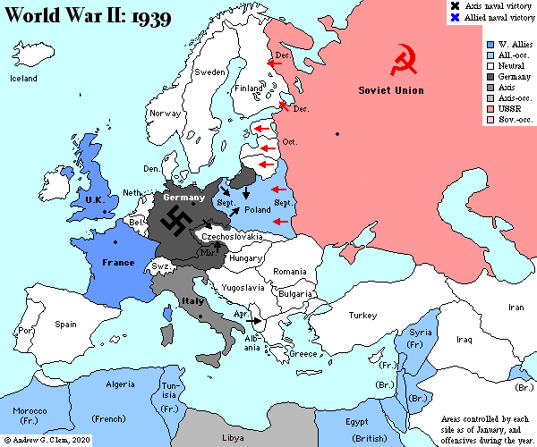
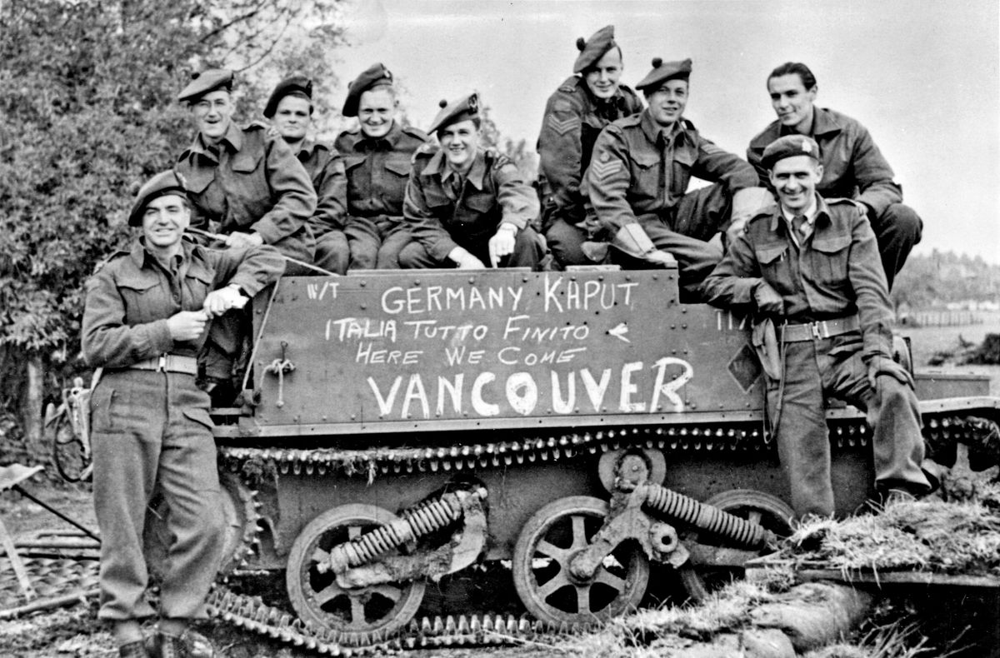
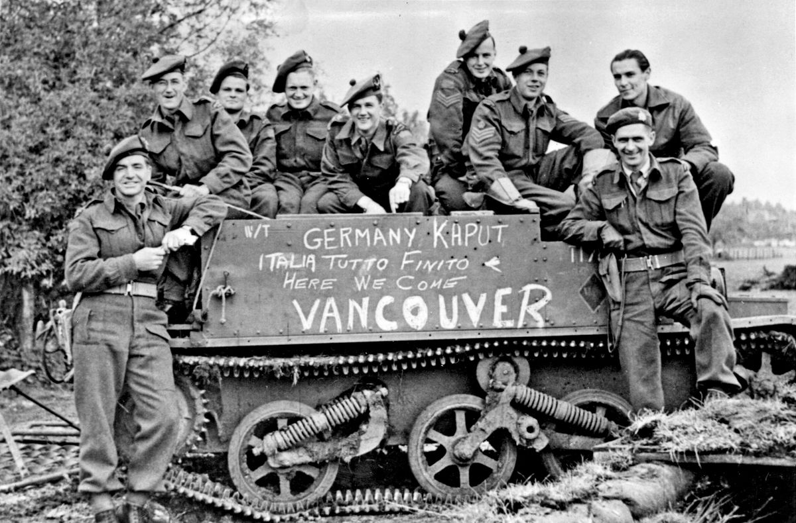

What was significant during this time?
World War II was a global conflict that took place from 1939 to 1945 and involved all the world's major powers. It was the sequel to the first Great War and the cause can very well be linked to it as one of the largest reasons Hitler was elected was because his led his people by nationality in reaction to the Treaty of Versailles and Germany's humiliation. Unfortunately this led to terrible actions and crimes. It was the largest war in human history, involving a terrifying 60 million soldiers and over 60 million civilian casualties. It involved the Axis Powers, which consisted of Germany, Japan, and Italy, against the Allied Powers, which consisted of the United States, the United Kingdom, the Soviet Union, and China. The war concluded with the defeat and surrender of Germany, Japan, and Italy, and it had a profound impact on the history of the world, affecting societies, technologies, and international relations in ways that continue to shape the current era.

How did WWII make its mark on Canada?
Canada played a significant role in World War II, both in terms of military and economic support. The country's military forces fought on several fronts, including the Pacific and European theatres, and over one million Canadians served during the war. Canada also contributed to the war effort through manufacturing, resources, and transportation, being very useful in supplying the Allied forces with materials and equipment. The war had a large impact on Canadian society, as we took our freedom stance in ideologies against the horrors we have seen, and politics, leading to a renewed sense of patriotism and unity, and causing the development of new social programs and policies.
 

What was Canada's defining role in WWII?
Canada's defining role in WWII was its military involvement and contribution, with over one million Canadians serving in the armed forces. The country's forces fought on several fronts, including the Pacific and European theatres, and played a significant part in the liberation of Europe and the defeat of the Axis. Canada's involvement in the war demonstrated its commitment to the Allied cause and its willingness to defend democracy and freedom. It also marked a turning point in Canadian history, leading to a renewed sense of patriotism and unity, and contributing to the development of new social programs and policies in the years following the war.